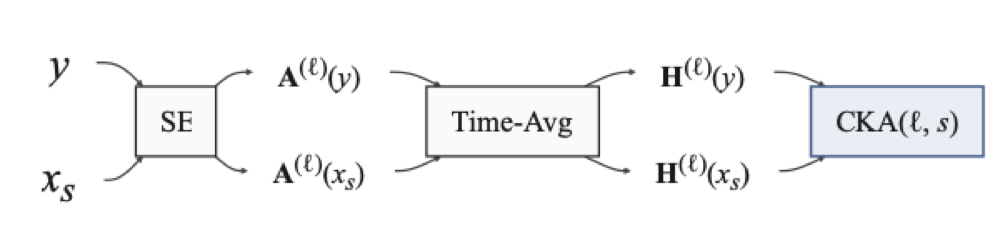

Pipeline overview#
A single utterance walked through the probing pipeline. The same clean signal is paired with a noisy counterpart at one SNR; both are passed through the frozen MUSE model; activations at one probed layer are extracted and time averaged; the resulting representation matrices are compared by linear CKA. The remaining chapters repeat this construction across the SNR sweep, all probed layers, the three architectures, and reverberation, but the geometry of a single comparison is easier to read in isolation.
Runtime: under 60 seconds on CPU; faster with CUDA or MPS.

Activation-extraction pipeline (poster, Fig. 1). For each clean utterance \(y\) and its degraded counterpart \(x_s\) at level \(s\), both signals are passed through the frozen SE model. The activations \(\mathbf{A}^{(\ell)}\) at probed layer \(\ell\) are time-averaged into representation matrices \(\mathbf{H}^{(\ell)}\), and clean and degraded representations are compared by linear CKA.
import sys
from pathlib import Path
REPO = Path.cwd().resolve()
while REPO.name != "SE-Probe" and REPO.parent != REPO:
REPO = REPO.parent
if str(REPO) not in sys.path:
sys.path.insert(0, str(REPO))
from se_probe.device import device_info, get_device
from se_probe.plotting import apply_paper_rcparams
apply_paper_rcparams()
DEVICE = get_device()
print(device_info(DEVICE))
import pandas as pd
DATA_DIR = REPO / ("results_df" if (REPO / "results_df").exists() else "results_demo")
print(f"Using data from: {DATA_DIR}")
Detected device: cpu
Using data from: /home/runner/work/SE-Probe/SE-Probe/results_demo
One utterance, one SNR, one model#
We pick a single clean utterance (clean_idx) and a single SNR for MUSE on the TBUS noise. The demo parquet ships precomputed CKA values; if results_df/ is present the notebook silently uses the full table instead.
muse_path = DATA_DIR / ("snr/cka_snr_muse.parquet" if (DATA_DIR / "snr").exists() else "cka_snr_muse_demo.parquet")
df = pd.read_parquet(muse_path)
df = df[df["noise_name"] == "TBUS"].copy()
first = df.iloc[0]
utt, snr = int(first["clean_idx"]), float(first["snr"])
one = df[(df["clean_idx"] == utt) & (df["snr"] == snr)].sort_values("layer").reset_index(drop=True)
print(f"utterance clean_idx={utt}, SNR={snr:g} dB, layers={len(one)}")
one[["layer", "CKA"]].head(8)
utterance clean_idx=12, SNR=-10 dB, layers=72
| layer | CKA | |
|---|---|---|
| 0 | TCFTransformer.decoder_level1.mhca_blks.0.tran... | 0.520844 |
| 1 | TCFTransformer.decoder_level1.mhca_blks.0.tran... | 0.070810 |
| 2 | TCFTransformer.decoder_level1.mhca_blks.0.tran... | 0.077300 |
| 3 | TCFTransformer.decoder_level1.mhca_blks.0.tran... | 0.692217 |
| 4 | TCFTransformer.decoder_level1.mhca_blks.0.tran... | 0.282161 |
| 5 | TCFTransformer.decoder_level1.mhca_blks.0.tran... | 0.234100 |
| 6 | TCFTransformer.decoder_level1.mhca_blks.0.tran... | 0.101000 |
| 7 | TCFTransformer.decoder_level1.mhca_blks.0.tran... | 0.314250 |
first_layer_cka = float(one["CKA"].iloc[0])
last_layer_cka = float(one["CKA"].iloc[-1])
min_layer_cka = float(one["CKA"].min())
print(f"CKA at first probed layer: {first_layer_cka:.4f}")
print(f"CKA at last probed layer: {last_layer_cka:.4f}")
print(f"CKA minimum across layers: {min_layer_cka:.4f}")
CKA at first probed layer: 0.5208
CKA at last probed layer: 0.1114
CKA minimum across layers: 0.0271
Optional: live inference#
Set SE_PROBE_RUN_INFERENCE=1 (and have run python scripts/setup.py to fetch the upstream MUSE weights) to recompute one CKA value from raw audio. The cell loads the model, mixes a synthetic noisy clip, and runs a single forward pass through the activation extractor. Skipped by default.
import os
if os.environ.get("SE_PROBE_RUN_INFERENCE") == "1":
import numpy as np
from se_probe.activation_extraction import load_muse_activation_extractor
from se_probe.cka import cka
rng = np.random.default_rng(0)
sr = 16000
clean = rng.standard_normal(sr * 2).astype("float32") * 0.05
noise = rng.standard_normal(sr * 2).astype("float32") * 0.05
target_snr_db = 0.0
sig_p = float((clean ** 2).mean())
noise_p = sig_p / (10 ** (target_snr_db / 10))
noisy = clean + noise * np.sqrt(noise_p / max(float((noise ** 2).mean()), 1e-12))
extractor = load_muse_activation_extractor(device=DEVICE)
act_clean, _ = extractor(clean)
act_noisy, _ = extractor(noisy)
layer = next(iter(act_clean))
val = cka(act_clean[layer], act_noisy[layer])
print(f"Live CKA on synthetic clip ({layer}): {float(val):.4f}")
else:
print("SE_PROBE_RUN_INFERENCE not set — skipping live inference. Set it to '1' to enable.")
SE_PROBE_RUN_INFERENCE not set — skipping live inference. Set it to '1' to enable.